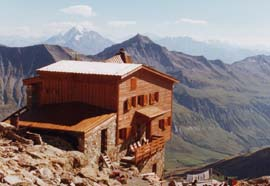

Refuge Robert Blanc (2750 m)

Département, commune : Savoie, commune de Bourg Saint Maurice
Carte : AsF© 16 case A15, IGN Top25 3531 ET pli H1
Situation : en haut du vallon des Lanchettes. Téléphone refuge : 04 79 07 79 79
Propriétaire : les Amis de Robert Blanc
Gardien : Marc Sutra, BP 67, 73701 Bourg St Maurice cedex, tél : 04 79 07 24 22, 06 09 40 21 61
Ouverture et gardiennage : ouvert et gardé du 15/6 au 15/9, fermé hors cette période (abri hivernal de 10 places)
Commodités : 45 places (dortoir avec matelas, draps, couvertures, oreillers),
restauration, vente de produits alimentaires de base,
eau de fonte, non potable, à 10 m.
Accès : par sentier balisé depuis le parking des Lanchettes (1900 m) en 2 h
Itinéraires à proximité : -
Randonnées à partir du refuge :
guide ou site AsF© : néant
autres randonnées : col du Mont Tondu (AF), col de l’Enclave (AF) ; courses d’alpinisme
Photo des Amis de R Blanc